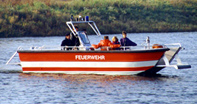
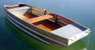
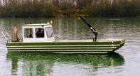
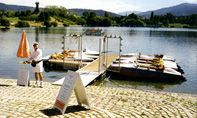

Produkte
| Rettungsdienste: DLRG, Feuerwehr, THW, Wasserwacht, Yacht- und Segelclubs, Taucher: Mehrzweckboote, Rettungsboote, Arbeitsboote |
 |
| Fischen und Angeln, Berufsfischerei und Fischzucht, Arbeitsboote und Beiboote: Dingis, Nachen, Ruderboote, Fischerboote und Beiboote |
 |
| Arbeitsboote, Laborboote, Vermessungsboote, Boote zur Gewässerüberwachung und Untersuchung, für Biologie, Limnologie, Hydrologie und Hydrometrie |
 |
| Freizeitanlagen und Bootsvermietungen, Yacht- und Segelschulen und Clubs, Marinas: Tretboote, Fahrgastschiffe, Steganlagen, Badeinseln, Gangways, Schwimmerpontons |
 |
Hans Barro Aluminium-Bootsbau Steinweg 9 - D-89293 Kellmünz an der Jller Tel. (08337) 75002 - Fax. (08337) 75005